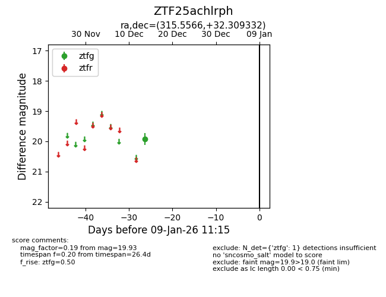
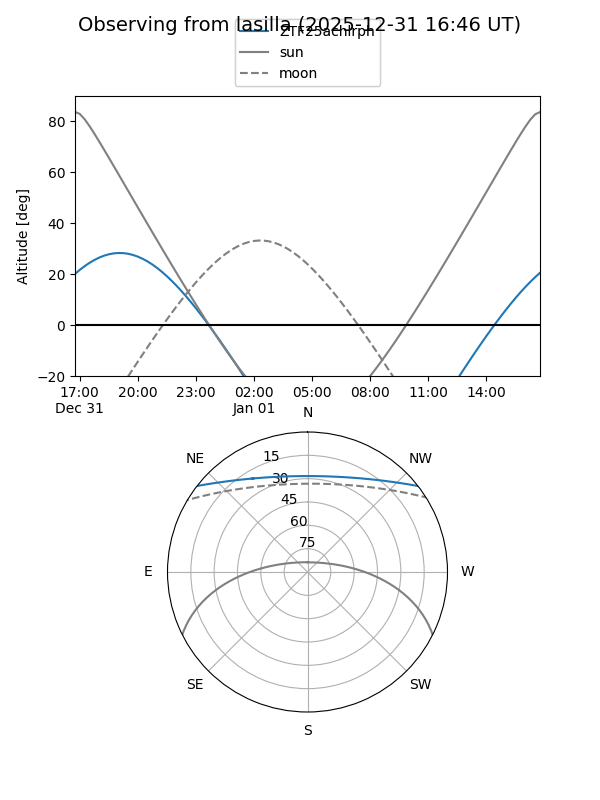
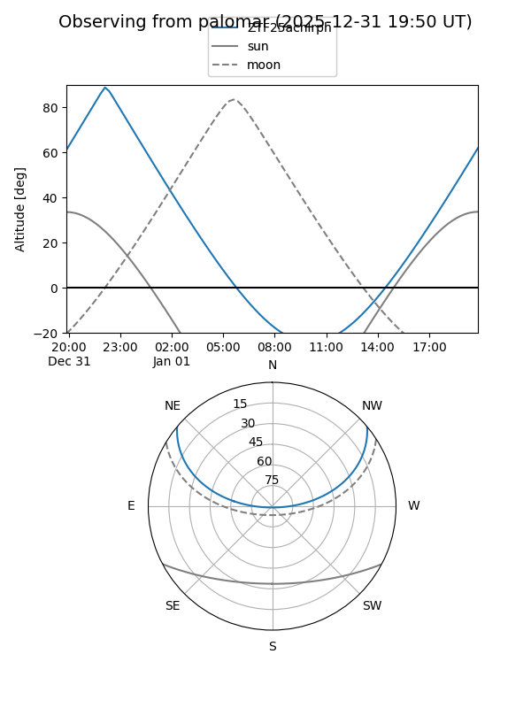

ZTF25achlrph
Target ZTF25achlrph at 2025-12-18 11:18
Aliases and brokers:
FINK: fink-portal.org/ZTF25achlrph
Lasair: lasair-ztf.lsst.ac.uk/objects/ZTF25achlrph
ALeRCE: alerce.online/object/ZTF25achlrph
alt names
ZTF25achlrph (ztf,fink_ztf)
Coordinates:
equatorial (ra, dec) = 315.5566,+32.30933
equatorial (HMS+DMS) = 21:02:13.58,+32:18:33.60
galactic (l, b) = (76.8079,-9.35875)
Photometry
last ztfg=19.93
1 ztfg detections
Lightcurve

Visibility


Additional plots